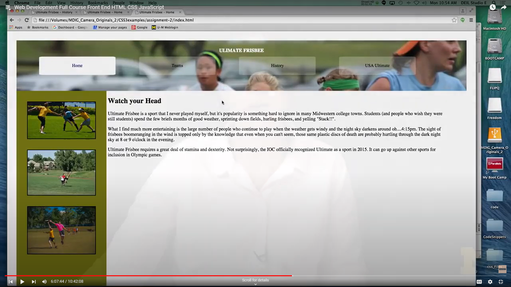

Insstructions
recreate this page (or a simular page) using the instructions listed below.

-
Make sure to add a background image + nav bar that highlights
what page you are on (hint: add class to highlight what page you are on)
-
Creat a Stylesheet for page that includes/updates the following:
Body, header, h1, links, active class, left class and right class,
and images within the left hand side of the page
- Body: (1) Change padding/margin (2) adjust your text if necessary
(3) make sure it is consistent across all browsers
- Header:(1) Change the background color (2) add background image
- h1: (1) increase font sixe (2) change font color
- Links/Navbar: (1) Style only the links in the nav element
(2) Make sure they are spaced apart (3) Make sure to round
corners and remove underline
- Active class: (1) Use background color/font color to create active link
(2) use class to distinguish current page from others
- Left and Right Class: (1) These two elements should be side by side.
(2) Change the background color for the left class (hint: may need to mess with display or add float)
- (1) Put the images back in and put a border around them. (2) Make sure that they are centered
within the ".left" class (3) Put Spacing between them on the top and bottom too.
-
Make Sure Page is not squished
- Run your Page through a few accesibility evalaters (wave, web aim, etc.) Use Proper Standards.
Submitted